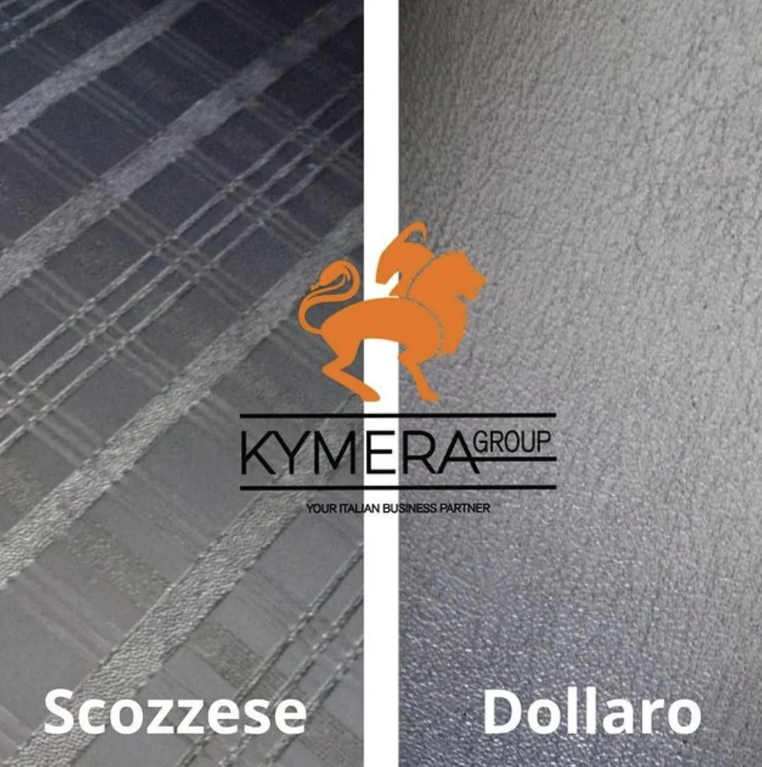
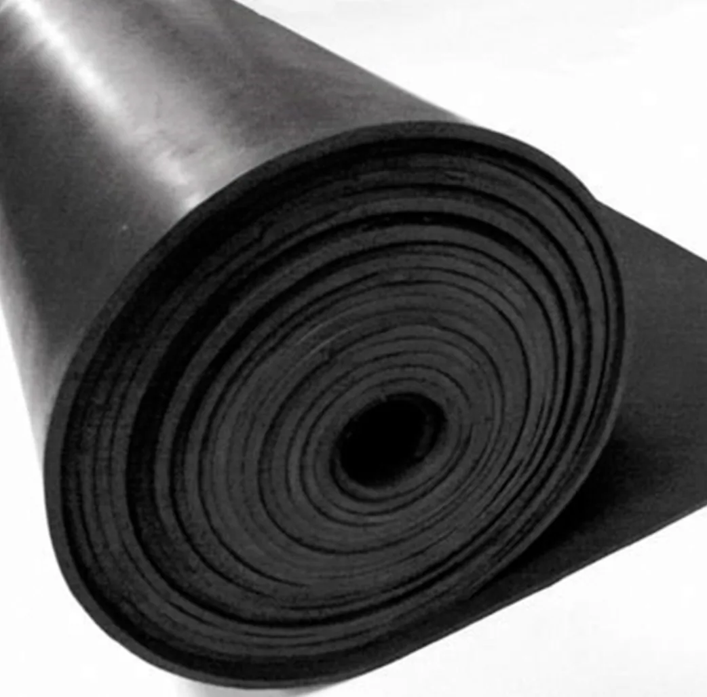
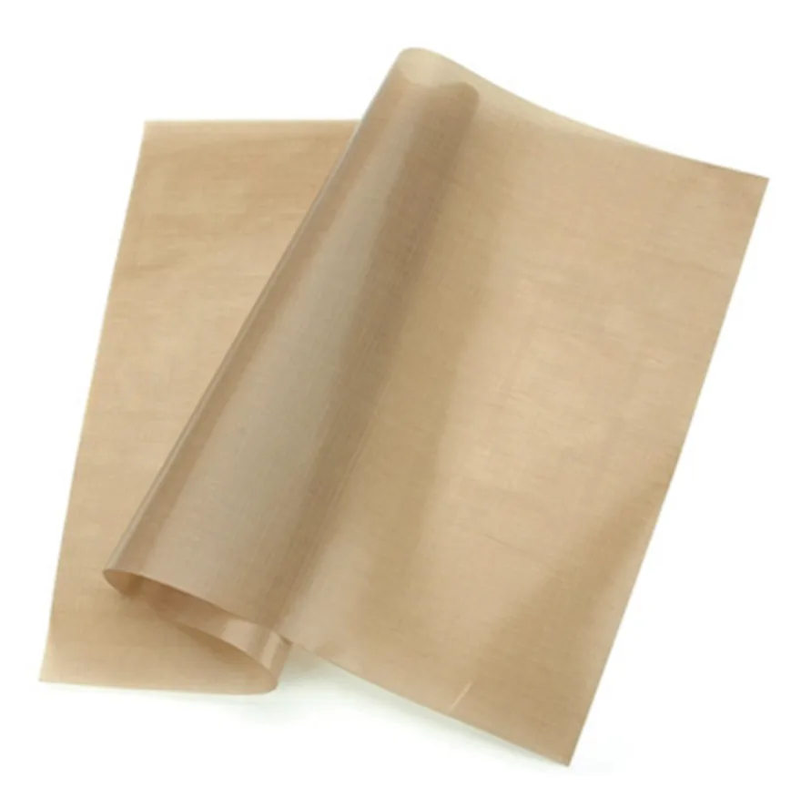
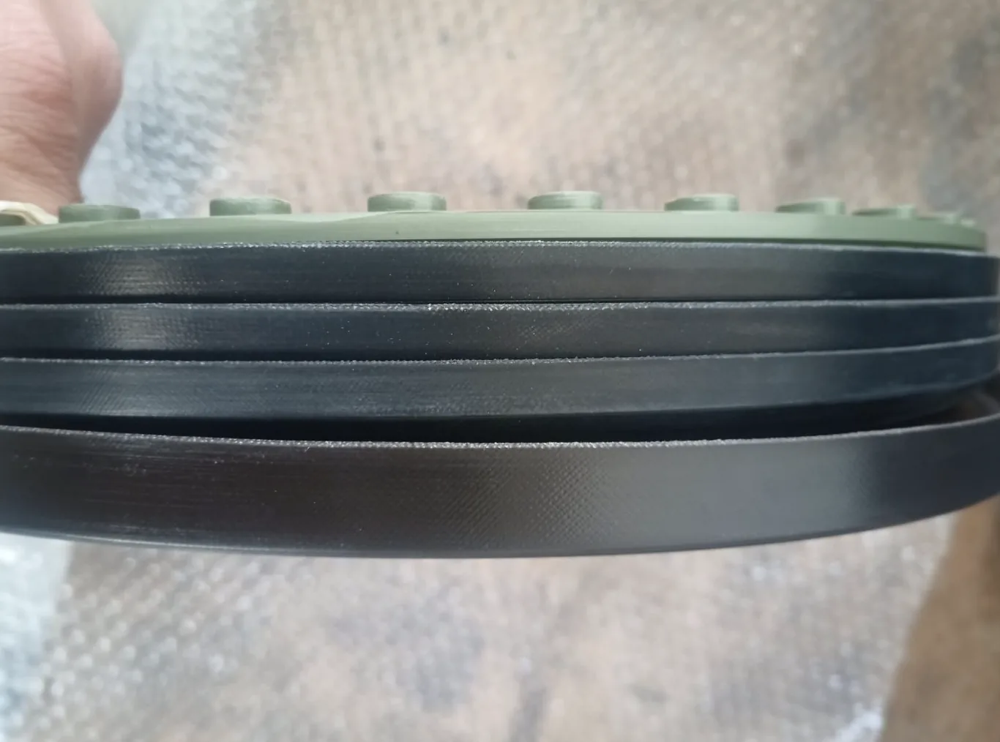

Hydraulic Press
Spare Parts
Spare parts and consumables for leather ironing, plating and embossing presses — 100% wool felt plates, EPDM rubber, Teflon sheets, engraved printing plates and piston seal kits. Sourced for your machine and quality-checked before they ship.

Reduce Downtime
Keep felt plates, EPDM, Teflon and seal kits on the shelf. When the press marks the leather or loses tonnage, swap the wear part and your finishing line is back in production in minutes, not days.
Protect The Finish
A sound felt, clean Teflon and a properly sealed cylinder press the grain flat and uniform — fixing the finish, holding the gloss and transferring a crisp embossing pattern every cycle.
Matched To Your Machine
Felts, rubber, Teflon, printing plates and seal kits identified against your exact plate size, brand and model — original and compatible, with no minimum order quantity.
Spare Parts for
Leather Hydraulic Presses
Kymera Group supplies spare parts and consumables for the hydraulic presses used in tanneries to iron (plate) and emboss leather. The hide is laid between a heated plate and a felt-cushioned bed and pressed under high tonnage: this smooths and compacts the grain, fixes the finish and adds gloss, or — with an engraved printing plate — transfers a grain pattern, texture or logo onto the surface.
From the consumables that touch the leather every cycle — the 100% wool felt plate, the EPDM rubber and the Teflon sheet — through to the engraved printing plates and the seal kits that keep the hydraulic cylinder holding pressure, we source the right component for your specific machine. Tell us your brand, model and plate size, and we'll match the part, confirm the specification and quote it for you.

The Complete
Hydraulic Press Catalogue
From wool felt plates, EPDM rubber and Teflon to engraved printing plates and piston seal kits — everything your ironing, plating and embossing press needs, matched to your plate size and model and quality-checked before dispatch.
100% Wool Felt Plate
The resilient cushion blanket between the platen and the leather — distributes pressure evenly, absorbs irregularities and gives plating and embossing a uniform finish. A periodic wear item.
Request a Quote
EPDM Rubber
A heat-resistant, resilient backing sheet for the press bed — cushions the hide and helps transfer pressure and heat uniformly across the whole plate during ironing and embossing.
Request a Quote
Teflon Sheet
Non-stick, heat-resistant PTFE facing that protects the heated plate and the grain — stops the leather sticking and keeps the plate surface clean through plating and embossing.
Request a QuotePRINTING PLATES
New and Used engraved plates that transfer a grain pattern, texture or logo onto the leather under heat and pressure. Standard grains in stock and custom plates produced to your own design.
Request a Quote
Seal Kit For Piston
Gaskets and seals for the hydraulic cylinder — hold pressure and prevent oil leaks so the press recovers full, repeatable tonnage. Matched to your cylinder bore and brand.
Request a Quote
General Spare Parts
Heating elements, valves, hydraulic seals and wear parts for ironing, plating and embossing presses — tell us your brand and model and we'll identify the correct part.
Request a QuotePressing & Embossing, Step by Step
In finishing, the hydraulic press irons and embosses the leather under heat and high tonnage. The hide is laid on a felt-cushioned bed, pressed against a heated plate and released — here is the cycle on the production floor.
Lay the Hide
The finished hide is spread flat on the felt plate and EPDM bed, grain up toward the heated plate or the engraved printing plate.
Close & Press
The hydraulic cylinder closes the platen and applies high tonnage; the felt and rubber spread the pressure evenly across the whole surface.
Heat & Transfer
The heated plate irons the grain through the Teflon facing — smoothing and glossing it, or transferring the pattern from the engraved printing plate.
Release & Unload
The cylinder releases and the pressed hide is lifted clear — grain compacted, finish fixed and the embossing crisp, ready for the next stage.
Your Questions,
Answered
What is a hydraulic press used for in a tannery?
In a tannery the hydraulic press irons (plates) and embosses the leather. The hide is laid between a heated plate and a felt-cushioned bed and pressed under high tonnage — this smooths and compacts the grain, fixes the finish and adds gloss, or, with an engraved printing plate, transfers a pattern, texture or logo onto the surface.
What is the wool felt plate on a hydraulic press for?
The 100% wool felt plate is the resilient cushion blanket between the press platen and the leather. It distributes the pressure evenly across the hide, absorbs irregularities, protects the grain and gives plating and embossing a uniform finish. It is a wear item replaced periodically.
Why are EPDM rubber and Teflon sheets used in the press?
EPDM rubber is a heat-resistant, resilient backing layer that cushions the hide and helps transfer pressure and heat uniformly. The Teflon (PTFE) sheet is a non-stick, heat-resistant facing that stops the leather grain sticking to the heated plate and keeps the plate surface clean during plating and embossing.
Can you make custom embossing printing plates?
Yes. We supply engraved printing plates that transfer a grain pattern, texture or logo onto the leather under heat and pressure, and we can produce custom plates to your own design. Send us the pattern or sample to reproduce and the plate size of your press.
Which hydraulic press brands do your spare parts fit?
Our parts and consumables are compatible with the most widespread brands, including Mostardini, Gozzini, Tomboni and Svit. Tell us your machine model and we will confirm the correct part for you.
Do you supply piston seal kits, and is there a minimum order?
Yes — we supply seal kits for the press piston that hold pressure and stop oil leaks so the press recovers full tonnage. There is no minimum order quantity: a single felt, one seal kit or a complete consumables package, supplied with the same care.
Send Your Request
Tell us your hydraulic press brand, model and plate size, the part you need and the quantity — we'll come back to you with the right component, the right price, and a clear lead time.